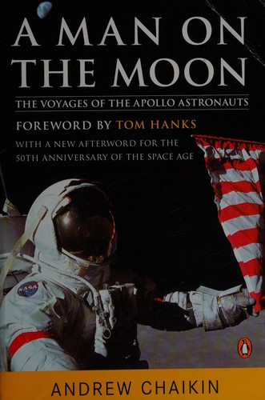

安德鲁·柴金（Andrew Chaikin）是美国著名的科学作家与太空历史学家，1956年出生，毕业于布兰迪斯大学地质学专业，曾任职于史密森学会天体物理观测台。他用近十年时间，走访了二十四位登月宇航员中的二十三位（阿波罗13号的杰克·斯威格特已于1982年去世），积累了逾一百五十小时的深度访谈录音，又遍查美国国家航空航天局的档案与工程报告，最终于1994年出版了这部长达六百八十余页的《月球上的人》。此书涵盖1968年阿波罗7号到1972年阿波罗17号的全部任务，是迄今为止对阿波罗计划最为翔实、最具人文深度的一手记录，也是空间探索历史写作的里程碑之作。
柴金的叙事以宇航员的亲历视角为主轴，将工程技术的高度复杂性与人类情感的真实质感融为一体。全书依任务时间顺序展开：从阿波罗7号首次载人飞行时的舱内感冒风波，到阿波罗8号人类首次绕月飞行时宇航员在平安夜朗读《创世纪》的历史画面；从尼尔·阿姆斯特朗踏上月面那一刻内心的平静专注，到阿波罗13号氧气罐爆炸后三名宇航员在零下温度与极端缺氧中九死一生的七十二小时；再到后期任务中地质学家哈里森·施米特在月面采集样本时近乎忘我的科学热情。柴金不仅记录了那些广为人知的高光时刻，更深入还原了宇航员训练的漫长磨砺、工程师与宇航员之间在信任与风险之间不断谈判的日常，以及返回地球后许多宇航员内心长期无法消解的孤独感——"我曾经在那里，而没有人能真正理解那意味着什么"。
《月球上的人》出版后迅速获得各方高度评价。科克斯书评（Kirkus Reviews）将其评定为"空间探索写作的最高水准之作"。汤姆·汉克斯（Tom Hanks）在阅读此书后深受触动，亲自联系柴金，促成了1998年HBO迷你剧《从地球出发》（From the Earth to the Moon）的制作——汉克斯担任制片人，并在首集亲自出镜，该剧荣获1998年艾美奖最佳迷你剧奖。参与阿波罗计划的宇航员们普遍认为此书是对他们经历最忠实的呈现，阿波罗11号指令长尼尔·阿姆斯特朗也对柴金的研究之深入给予了罕见的公开肯定。
对于关注创新、领导力与大型复杂项目管理的商业读者而言，《月球上的人》提供了一个无可替代的案例研究。阿波罗计划在不到十年的时间内，将约四十万名工程师、科学家与技术人员的努力整合为一套从无到有的飞行系统——这一工程奇迹背后，是NASA管理层对风险的极度清醒认知、对系统冗余与应急预案的近乎偏执的重视，以及对"问题驱动"文化的坚守。柴金的叙述揭示：阿波罗的成功不是因为没有失败，而是因为组织能够在失败面前迅速学习、调整并继续前行——这或许是这段历史留给后来所有试图完成"不可能任务"的人最深刻的启示。